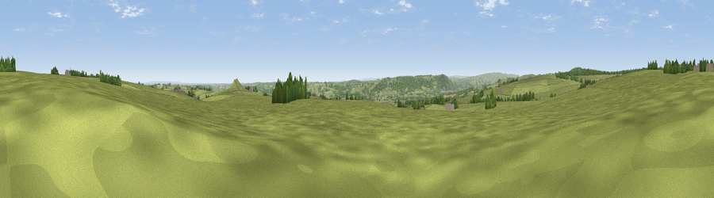

Stanistan Hill
#23483 in England · top 41% of its area beats it · near BraythornThe view, rendered

A 360° render of this exact spot computed from the terrain model, tree cover and land cover — summer colours, afternoon light, calibrated against photographs of famous viewpoints. Real trees, hedges and buildings will differ in detail.
The panorama
Grey silhouette: terrain skyline in each direction (720 bearings, Earth curvature and refraction included). Dashed green: skyline with trees (+15 m) and buildings (+8 m) as obstacles. Blue strip: how far the ground is visible on each bearing.
Where the view opens
Wedge length = distance to the farthest visible ground on that bearing (vegetation-aware). Rings at 10, 25 and 50 km.
What fills the view
83% grassland · 12% woodland · 3% cropland · 2% built-up
Angular shares of the visible panorama (visual magnitude), not map area. Landscape diversity 0.26 (0–1 Shannon).
Key numbers
More beautiful places nearby
The staircase of upgrades: each row has a higher view potential than everything closer. Driving times are estimates from straight-line distance, calibrated against real road routing — check an actual route before setting out.
| Place | Direction | Drive | Score |
|---|---|---|---|
| Viewpoint near Braythorn | NNE · 1 km | ~4 min | 54.7 |
| Viewpoint near North Rigton | ESE · 2 km | ~5 min | 66.6 |
| Viewpoint near Timble | WNW · 5 km | ~11 min | 68.1 |
| Viewpoint near Timble | WNW · 5 km | ~12 min | 68.3 |
| Surprise View | SW · 7 km | ~15 min | 70.7 |
| Viewpoint near Otley | SW · 8 km | ~15 min | 77.5 |
| Viewpoint near East Witton | NNW · 37 km | ~55 min | 77.8 |
| Hood Hill | NE · 40 km | ~59 min | 79.6 |
53.94427, -1.61675 · source: osm peak · position refined by local search. Computed location — check access rights before visiting.